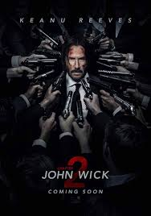
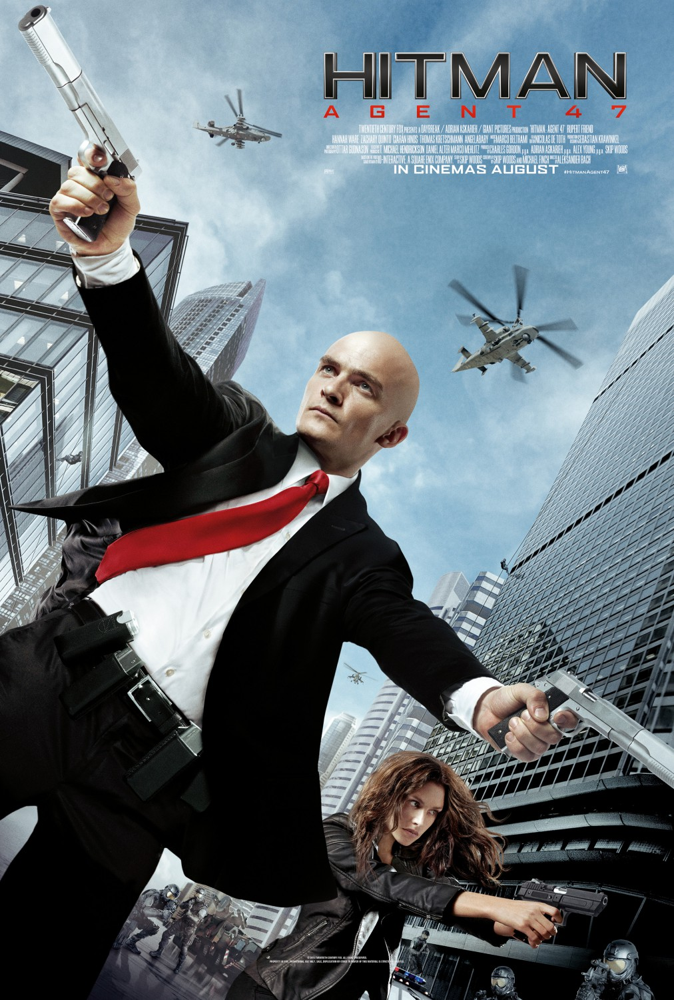
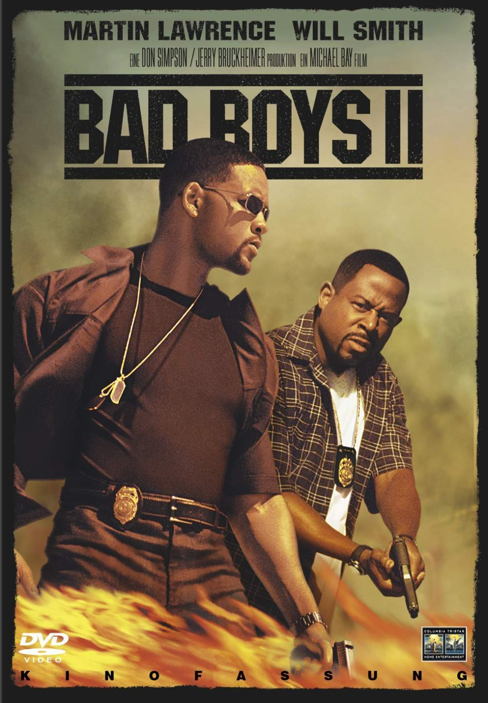
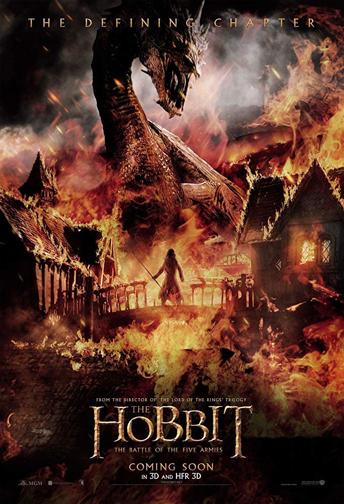
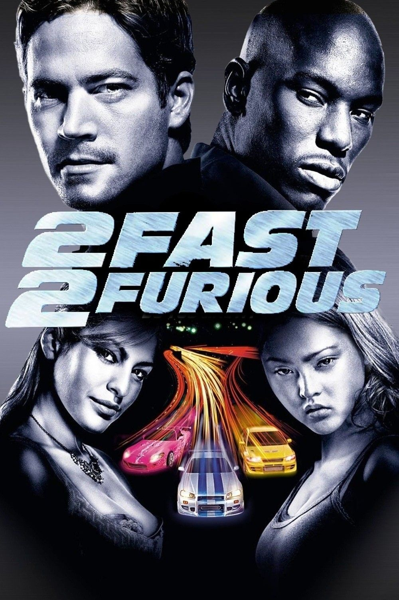

Johne Wick:
Retired super-assassin John Wick's plans to resume a quiet civilian
life are cut short when Italian gangster Santino D'Antonio shows up on
his doorstep with a gold marker, compelling him to repay past favours.
Ordered by Winston, the kingpin of secret assassin society The Continental,
to respect the organisation's ancient code, Wick reluctantly accepts the assignment to
travel to Rome to take out D'Antonio's sister, the ruthless capo atop the Italian Camorra crime syndicate
Back to top
Hit Man:
Raised from childhood by the mysterious Diana organisation, Agent 47
is the perfect killer, but when he is dispatched to kill the Russian president,
47 discovers that his employers have betrayed him. Taking prostitute and possible witness Nika with him,
the enigmatic assassin flees from both Interpol and the Russian secret service as he fights to uncover the root of the conspiracy.
Back to top
Bad Boys 2:
The drug ecstasy is flowing into Miami, and the police want it stopped.
Police Detective Marcus Burnett (Martin Lawrence) and his partner, Mike Lowrey (Will Smith),
are just the men to do it. They track the drugs to a Cuban smuggler, Johnny Tapia (Jordi Mollà),
who is also involved in a bloody war with Russian and Haitian mobsters. If that isn't bad enough,
there's tension between the two cops because Lowrey is romantically involved with Burnett's sister, Syd (Gabrielle Union).
Back to top
The Hobbit: An Unexpected Journey :
Bilbo Baggins (Martin Freeman) lives a simple life with his fellow hobbits in the shire,
until the wizard Gandalf (Ian McKellen) arrives and convinces him to join a group
of dwarves on a quest to reclaim the kingdom of Erebor. The journey takes Bilbo on a path through treacherous lands swarming with orcs,
goblins and other dangers, not the least of which is an encounter with Gollum (Andy Serkis)
and a simple gold ring that is tied to the fate of Middle Earth in ways Bilbo cannot even fathom
Back to top
2 Fast 2 Furious:
This sequel focuses on ex-police officer Brian O'Conner (Paul Walker),
who relocates from Los Angeles to Miami to start over. Becoming involved in the street-racing scene in his new city,
Brian befriends car-savvy Tej (Chris "Ludacris" Bridges) and Suki (Devon Aoki),
but his competitive streak ends when federal agents apprehend him and he must enter into a deal with the FBI.
Working with new partner Roman Pearce (Tyrese), Brian begins a dangerous mission to take down a powerful drug dealer
Back to top
References:
https://www.imdb.com/title/tt0322259/?ref_=nv_sr_srsg_0
https://www.imdb.com/title/tt0172156/
https://www.imdb.com/title/tt0903624/
https://www.imdb.com/title/tt2911666/
https://www.imdb.com/title/tt0465494/